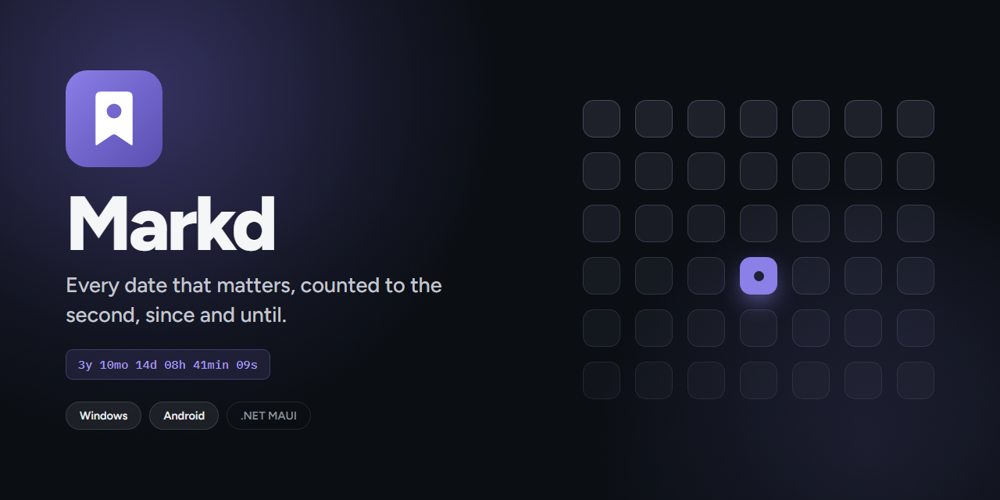

Markd
Markd counts the days that matter. Mark a date and it counts since it or until it, with milestones along the way.
No ads and no analytics. Your data stays on your device, with optional encrypted sync through your own OneDrive or Google Drive.
